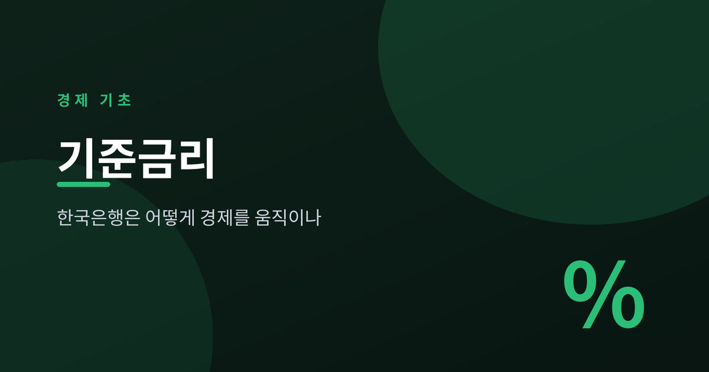
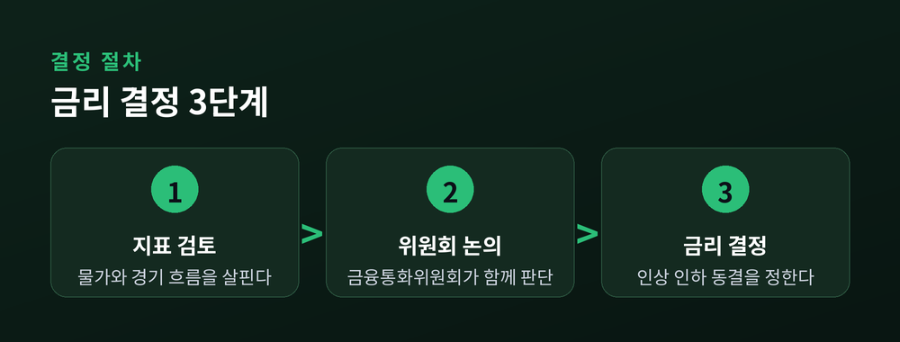
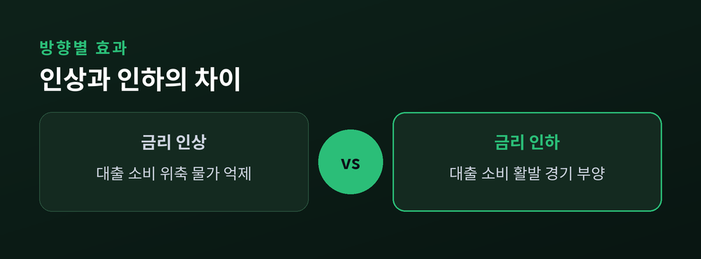
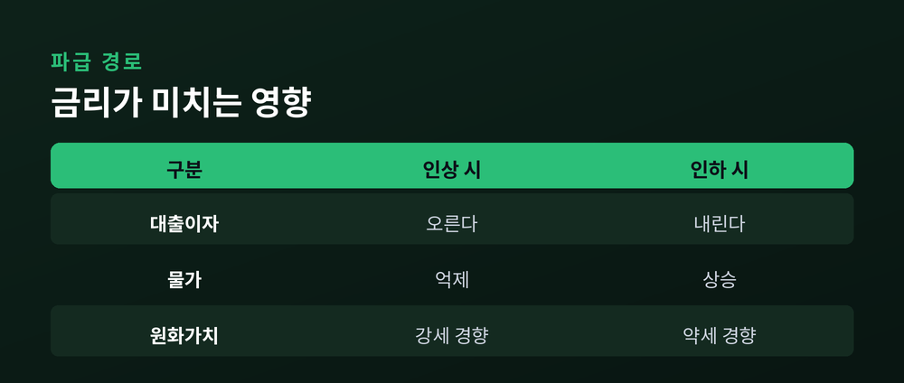

한국은행은 어떻게 경제를 움직이나

이번 글에서는 기준금리가 무엇이고, 그 숫자 하나가 어떻게 물가와 대출, 환율까지 움직이는지 정리해 보겠습니다. 특정 시점의 금리 수치를 외우기보다, 시간이 지나도 변하지 않는 기초 원리를 이해하는 데 초점을 맞추겠습니다.
기준금리는 한 나라의 중앙은행이 정하는 정책 금리입니다. 우리나라에서는 한국은행이 이 역할을 맡습니다. 은행들이 서로 돈을 빌리고 빌려줄 때, 그리고 한국은행과 거래할 때 적용되는 기준이 되는 이자율입니다.
기준금리 자체는 우리가 은행 창구에서 직접 만나는 금리는 아닙니다. 다만 시중의 예금 금리와 대출 금리는 이 기준금리를 출발점으로 삼아 정해집니다. 그래서 기준금리 하나가 움직이면, 경제 전반의 돈값이 따라 움직이는 셈입니다.
기준금리는 어느 한 사람이 정하지 않습니다. 한국은행의 금융통화위원회가 정해진 회의를 통해 결정합니다.

위원회는 물가 흐름, 경기 상황, 고용과 금융 안정 같은 여러 지표를 함께 살핍니다. 물가가 너무 오르면 금리를 올려 열기를 식히고, 경기가 가라앉으면 금리를 낮춰 활력을 불어넣습니다. 한국은행의 가장 중요한 목표는 물가 안정이며, 금리는 그 목표를 이루는 핵심 수단입니다.
기준금리가 오르면 돈을 빌리는 비용이 비싸집니다.

대출 금리가 올라 가계와 기업은 빚 내기를 주저하게 됩니다. 소비와 투자가 줄고, 시중에 도는 돈이 마르면 물가 상승 압력도 누그러집니다. 예금 금리가 오르니 저축의 매력은 커집니다. 예전에는 금리 인상이 대출자에게만 부담으로 여겨졌다면, 지금은 예금자에게는 반가운 소식이 되기도 합니다.
금리를 내리면 방향은 정반대입니다. 돈 빌리기가 수월해져 소비와 투자가 살아나고, 경기에 온기가 돕니다. 다만 지나치면 물가가 다시 들썩일 수 있습니다.
| 구분 | 금리 인상 | 금리 인하 |
|---|---|---|
| 대출·소비 | 위축된다 | 활발해진다 |
| 물가 | 억제 압력 | 상승 압력 |
| 예금 매력 | 커진다 | 줄어든다 |

금리의 영향은 국경 안에 머물지 않습니다. 변동금리 대출을 쓰는 사람이라면 기준금리 변화가 매달 갚는 이자에 직접 와닿습니다. 고정금리라면 당장은 아니어도, 새로 대출을 받을 때의 조건이 달라집니다.
환율도 금리와 맞물려 움직입니다. 우리 금리가 오르면 원화 자산의 이자 매력이 커져 외국 자금이 들어오는 경향이 있고, 이는 원화 가치를 끌어올리는 요인이 됩니다. 반대로 금리를 내리면 원화가 약해지는 쪽으로 힘이 실리기 쉽습니다.
기준금리는 물가, 대출, 환율을 잇는 하나의 조절 손잡이입니다. 한 곳을 건드리면 여러 곳이 함께 반응합니다.
다만 환율은 국내 금리만으로 정해지지 않습니다. 다른 나라의 금리, 국제 정세, 무역 흐름 같은 변수가 함께 작용합니다. 그래서 금리와 환율의 관계는 방향의 경향일 뿐, 언제나 그대로 나타나는 공식은 아닙니다.
기준금리는 중앙은행이 경제의 온도를 조절하는 손잡이입니다. 올리면 열기를 식히고, 내리면 활력을 더합니다. 그 결정은 금융통화위원회가 물가와 경기를 함께 저울질하며 내립니다. 그 여파는 대출 이자에서 시작해 소비와 물가, 나아가 환율까지 번져 나갑니다.
숫자 하나에 일희일비하기보다, 그 숫자가 왜 움직이고 무엇을 겨냥하는지를 읽는 눈을 갖추시길 권합니다. 금리를 이해한다는 것은 결국 경제가 숨 쉬는 방식을 이해하는 일입니다.